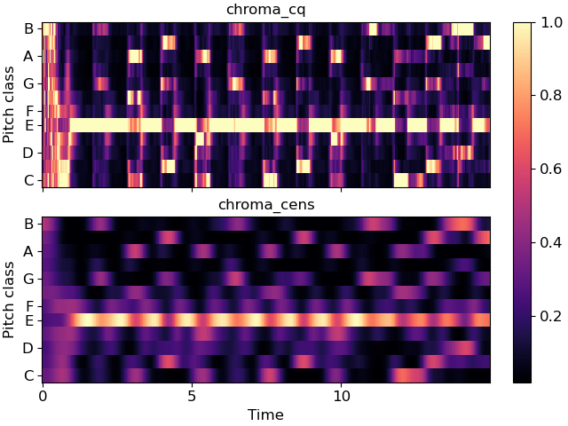

Caution
You're reading an old version of this documentation. If you want up-to-date information, please have a look at 0.9.1.
librosa.feature.chroma_cens¶
- librosa.feature.chroma_cens(*, y=None, sr=22050, C=None, hop_length=512, fmin=None, tuning=None, n_chroma=12, n_octaves=7, bins_per_octave=36, cqt_mode='full', window=None, norm=2, win_len_smooth=41, smoothing_window='hann')[source]¶
Computes the chroma variant “Chroma Energy Normalized” (CENS)
To compute CENS features, following steps are taken after obtaining chroma vectors using
chroma_cqt: 1.L-1 normalization of each chroma vector
Quantization of amplitude based on “log-like” amplitude thresholds
(optional) Smoothing with sliding window. Default window length = 41 frames
(not implemented) Downsampling
CENS features are robust to dynamics, timbre and articulation, thus these are commonly used in audio matching and retrieval applications.
- 1
Meinard Müller and Sebastian Ewert “Chroma Toolbox: MATLAB implementations for extracting variants of chroma-based audio features” In Proceedings of the International Conference on Music Information Retrieval (ISMIR), 2011.
- Parameters
- ynp.ndarray [shape=(…, n,)]
audio time series. Multi-channel is supported.
- srnumber > 0
sampling rate of
y- Cnp.ndarray [shape=(d, t)] [Optional]
a pre-computed constant-Q spectrogram
- hop_lengthint > 0
number of samples between successive chroma frames
- fminfloat > 0
minimum frequency to analyze in the CQT. Default: C1 ~= 32.7 Hz
- normint > 0, +-np.inf, or None
Column-wise normalization of the chromagram.
- tuningfloat
Deviation (in fractions of a CQT bin) from A440 tuning
- n_chromaint > 0
Number of chroma bins to produce
- n_octavesint > 0
Number of octaves to analyze above
fmin- windowNone or np.ndarray
Optional window parameter to filters.cq_to_chroma
- bins_per_octaveint > 0
Number of bins per octave in the CQT.
Default: 36
- cqt_mode[‘full’, ‘hybrid’]
Constant-Q transform mode
- win_len_smoothint > 0 or None
Length of temporal smoothing window. None disables temporal smoothing. Default: 41
- smoothing_windowstr, float or tuple
Type of window function for temporal smoothing. See
librosa.filters.get_windowfor possible inputs. Default: ‘hann’
- Returns
- censnp.ndarray [shape=(…, n_chroma, t)]
The output cens-chromagram
See also
chroma_cqtCompute a chromagram from a constant-Q transform.
chroma_stftCompute a chromagram from an STFT spectrogram or waveform.
librosa.filters.get_windowCompute a window function.
Examples
Compare standard cqt chroma to CENS.
>>> y, sr = librosa.load(librosa.ex('nutcracker'), duration=15) >>> chroma_cens = librosa.feature.chroma_cens(y=y, sr=sr) >>> chroma_cq = librosa.feature.chroma_cqt(y=y, sr=sr)
>>> import matplotlib.pyplot as plt >>> fig, ax = plt.subplots(nrows=2, sharex=True, sharey=True) >>> img = librosa.display.specshow(chroma_cq, y_axis='chroma', x_axis='time', ax=ax[0]) >>> ax[0].set(title='chroma_cq') >>> ax[0].label_outer() >>> librosa.display.specshow(chroma_cens, y_axis='chroma', x_axis='time', ax=ax[1]) >>> ax[1].set(title='chroma_cens') >>> fig.colorbar(img, ax=ax)
